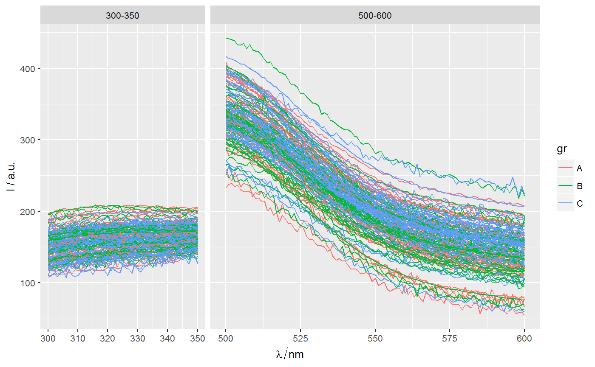
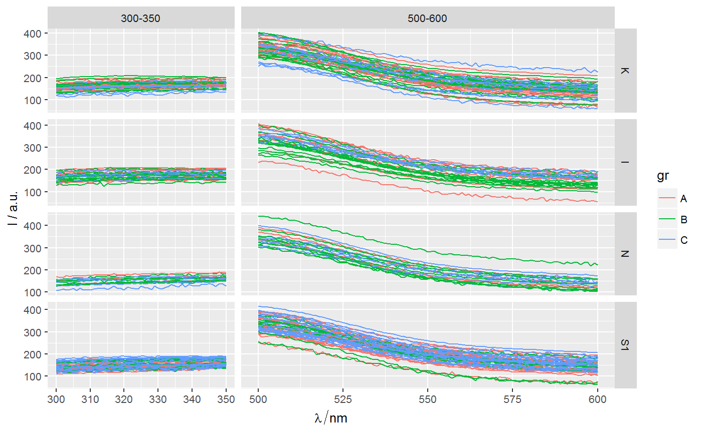
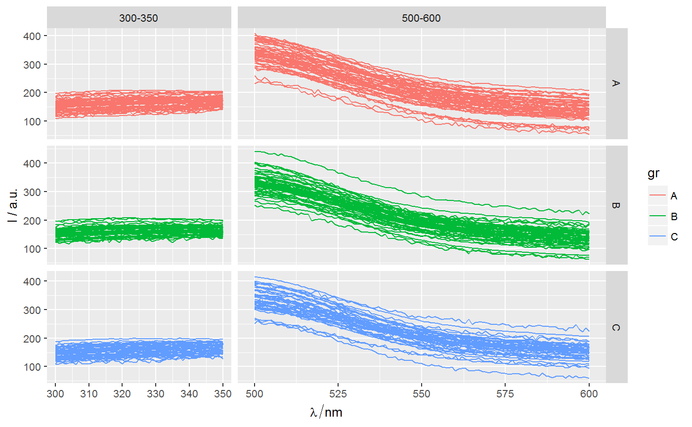
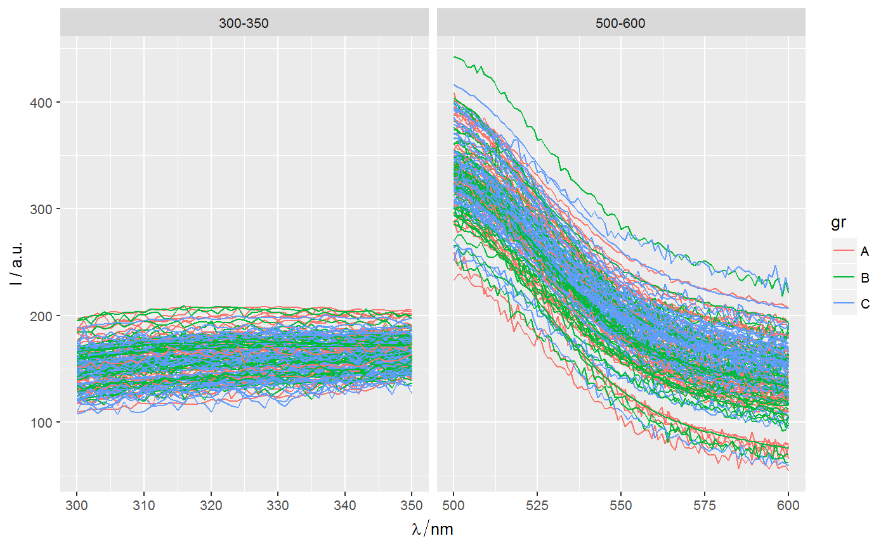

[!] Control facetting parameters in `ggplot` of `hyperSpec` object
Control facetting parameters in plot made with function ggplot
of hyperSpec (ggplot.hyperSpec method)
in which parameter wl.range is explicitly specified.
facet_wl(rows = ".", space = "free", scales = "free", ...)
Arguments
| rows | Name of factor variable (quoted string) to be used for making rows of facets. The dot "." (default) is used to indicate that there should be no faceting on this dimension. |
|---|---|
| space | If |
| scales | Are scales shared across all facets (the default,
|
| ... | Further parameters to be passed to |
Value
Updated ggplot2 object of class ggplot.
Details
This function is a wrapper for facet_grid and
facet_grid(.~.wl.range) can be used instead of facet_wl(".").
See also
Function facet_grid from package ggplot2.
Other spPlot functions for spectroscopy and hyperSpec: ggLims,
gg_palette, ggplot.hyperSpec,
label_expr2text
Other spPlot functions for ggplot2: ggLims,
gg_palette, ggplot.hyperSpec,
nTick
Examples
library(spPlot) p <- ggplot(Spectra2, wl.range = c(min ~ 350, 500~600)) + geom_line(aes(color = gr)) pp + facet_wl(space = "fixed")p + facet_wl("class")p + facet_wl("gr")# Alternative to `facet_wl()` is: p + facet_grid(. ~ .wl.range, scales = "free")# If `wl.range` is not specified, ERROR message is displayed: p2 <- ggplot(Spectra2) + geom_line(aes(color = gr)) p2 + facet_wl()#> Error in combine_vars(data, params$plot_env, cols, drop = params$drop): At least one layer must contain all variables used for facetting